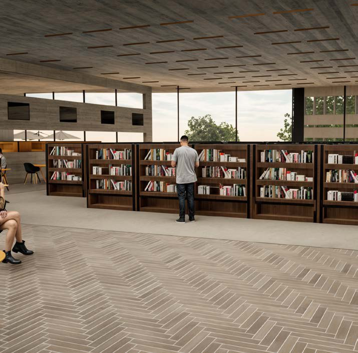
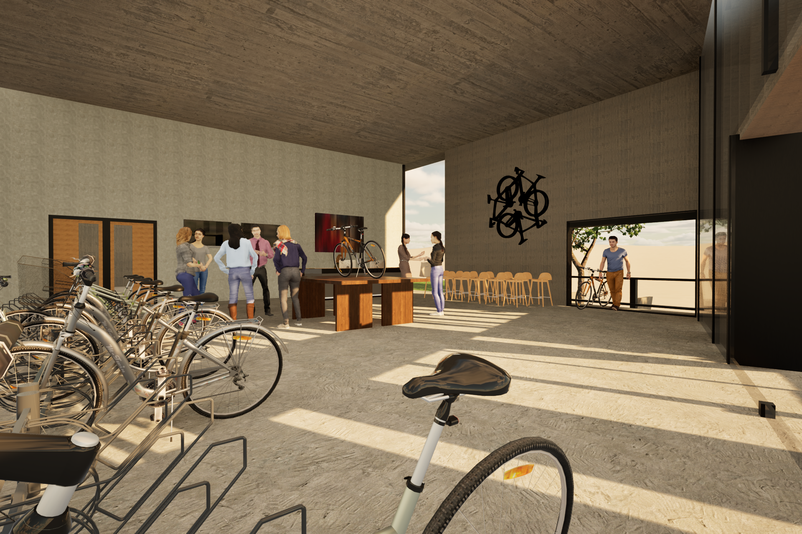

Architecture
Civic Library + Bike Hub · East Bloomington, IN
Public Library East

Role
Design · ResearchScope
Public Library + Bike HubTools
Rhino 8 · Twinmotion · IllustratorEast Bloomington Library, was designed to be a community anchor for learning, sustainability, and everyday use.
The project combines a traditional library with a bike hub for repair and learning that connects to Bloomington’s strong cycling culture and focuses on community health and knowledge.
01Problem
Bloomington's East Side has grown significantly, but the civic infrastructure has not. Many new residents don't have access the the strong civic services that Bloomington's downtown and university areas have access to.
02Solution
Libraries are now not just a place to house books but a civic hub for many activities. This library connects a key defining feature of Bloomington's culture, biking, with the ability to learn that libraries a built for.
03GRAPHICS


Process
The decision to design a brutalist adjacent structure comes from the history of this building types use in civic buildings. It signals community and an idea of modernism to the users and people who pass by.
04Product

